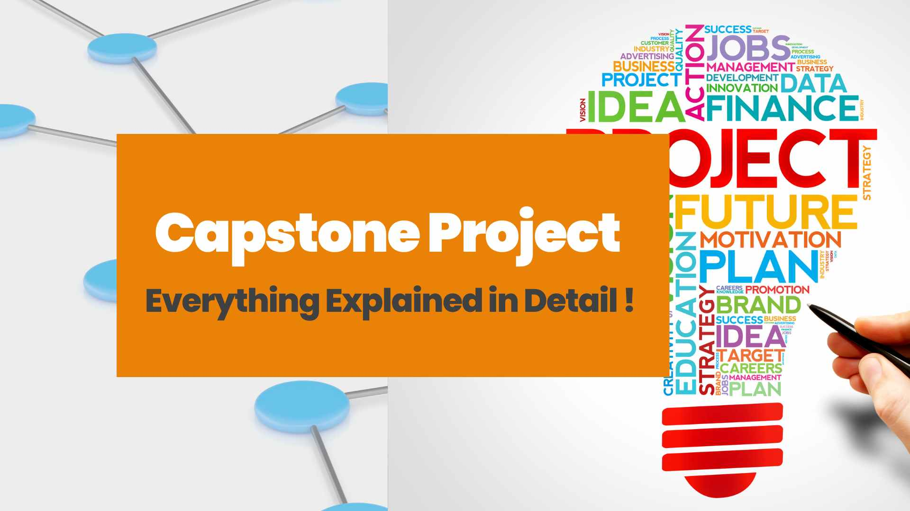
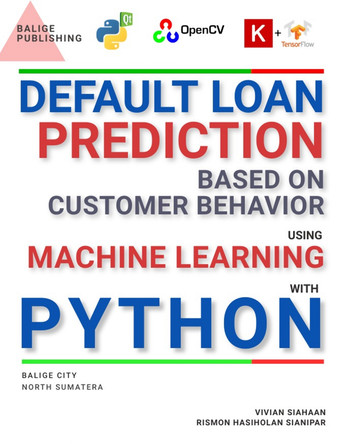
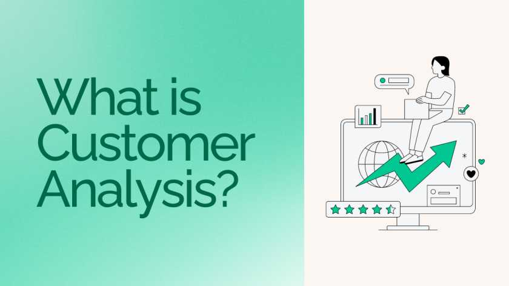
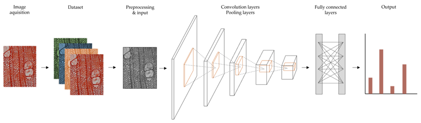
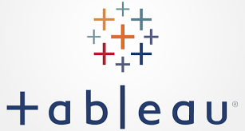

Built on 1.3M simulated card transactions (Sparkov dataset, 0.58% fraud rate). Uses a time-based train/test split to prevent data leakage, with behavioural feature engineering including geo_distance_km, velocity_24h, and hour_of_day. SMOTE applied to the training set only.
Primary model: XGBoost — PR-AUC 0.846, ROC-AUC 0.997, tracked with MLflow. Benchmarked against a 1D CNN. FinBERT transaction-text embeddings reduced to 30 dimensions via PCA.
SHAP values explain individual predictions. A RAG-powered analyst assistant (LangChain + ChromaDB) translates model decisions into fraud-ops language. Deployed as a Streamlit app.


Full data science workflow on the HMEQ dataset — EDA, feature engineering, class imbalance handling with SMOTE, and a multi-model comparison (Logistic Regression, Random Forest, XGBoost). Includes hypothesis testing and business-oriented recommendations on credit risk thresholds.

Conversion likelihood model on 4,600+ ExtraaLearn leads. Combines behavioural, demographic, and engagement features to identify which prospects are most likely to become paying customers. Evaluated with precision/recall trade-off analysis relevant to sales prioritisation.
Linear regression model with full diagnostic rigour — Variance Inflation Factor (VIF) for multicollinearity, residual analysis, and assumption testing. Team project covering end-to-end regression pipeline on real King County housing data.

CNN built from scratch and fine-tuned with transfer learning for multi-class image classification. Covers architecture design, data augmentation, training loops, and comparison of baseline vs. pre-trained model performance.
SQL-based exploration of global COVID-19 data sourced from Our World in Data. Covers case fatality rates, vaccination rollout, and regional comparisons using joins, CTEs, and window functions.
Revenue, category, and sizing analysis for a pizza restaurant using SQL. Identifies top-selling items, peak periods, and category-level margin insights to support operational decisions.

A collection of interactive Tableau dashboards covering sales performance, geographic trends, and KPI tracking. Published on Tableau Public.